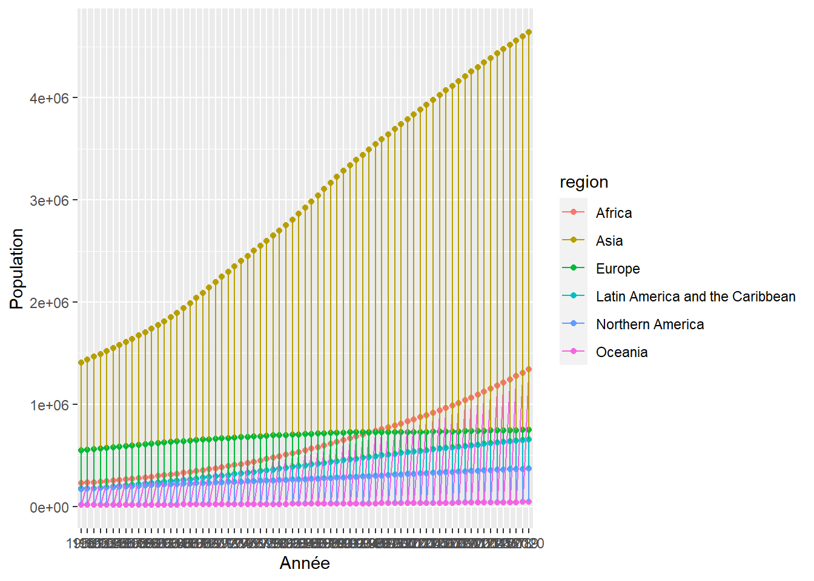
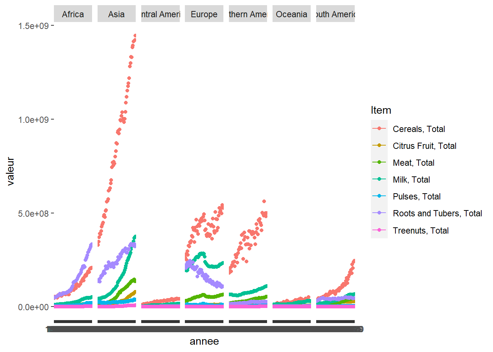
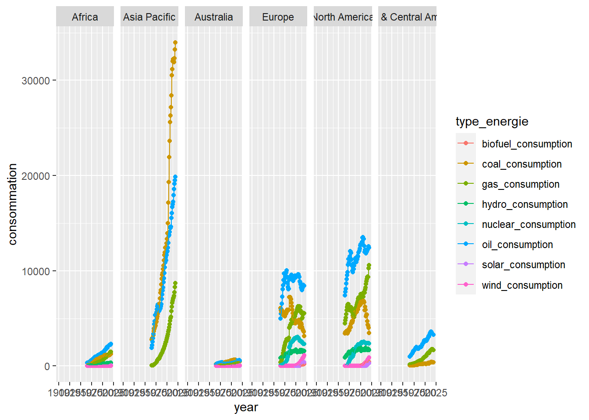

1
Présentation
1.1
R ou Python
2
Evolution Mondiale
2.1
## ROW 1
2.1.1
Evolution de la population
2.1.2
Evolution de la production de nourriture
2.2
## ROW 2
2.2.1
Evolution de la consommation d’energie par Sources d’énergie
2.2.2
Evolution de la consommation d’energie par Type
3
Evolution Population / Nourriture / Energie par Continent
3.1
Column 1
3.1.1
Evolution de la population
3.2
Column 2
3.2.1
Production de Nourriture
3.2.2
Consommation d’Energie
4
Evolution Monde
4.1
Column
4.1.1
Répartition de la population
4.2
Column
4.2.1
Répartition de la production de nourriture
4.2.2
Répartition de la consommation d’énergie
Bookdown template
Chapitre 3
Evolution Population / Nourriture / Energie par Continent
3.1
Column 1
3.1.1
Evolution de la population

3.2
Column 2
3.2.1
Production de Nourriture

3.2.2
Consommation d’Energie
